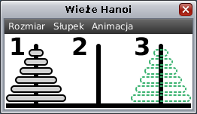

Wieże Hanoi
Tą nazwą opatruje się łamigłówkę, która jest klasycznym przykładem problemu
algorytmicznego i służy w informatyce jako ilustracja wielu pojęć i metod
rozwiązywania problemów, w tym zwłaszcza rekurencji. Mamy trzy paliki (słupki)
– ponumerowane liczbami 1, 2 i 3 – oraz pewną liczbę krążków rożnej
wielkości z otworami, nanizanych na jeden z palików w kolejności od największego
do najmniejszego, największy znajduje się na dole. Łamigłówka polega na przeniesieniu
wszystkich krążków z jednego palika do inny palik, z możliwością posłużenia
się przy tym trzecim – osobnym – palikiem w taki sposób, że:
- pojedynczy ruch polega na przeniesieniu jednego krążka między dwoma palikami.
- w żadnej chwili rozwiązania łamigłówki większy krążek nie może leżeć na mniejszym.

Zadaniem w tej lekcji jest napisanie funkcji „void hanoi(n, skad, dokad)”.
Funkcja powinna przestawiać wieże ze słupka „skad” na słupek „dokad”.
Funkcja „main” będzie wywoływała funkcję „hanoi” z parametrami
„skad” oraz „dokad” będącymi liczbami naturalnymi z przedziału od 1 do 3,
przy czym te dwie wartości będzą zawsze od siebie różne.
Parametr n to liczba naturalna większa od 0 i oznacza ona, iż na słupku
początkowym jest nanizanych n krążków. Twoja funkcja powinna operować
na krążkach, które są pokazane w specjalnym oknie. W tym celu powinienieś
w swojej funkcji skorzystać z funkcji specjalnej „void przenies(skad, dokad)”.
Funkcja „przenies” jak sama nazwa wskazuje służy do przenoszenia krążków
i jest szerzej omówiona w zakład funkcje specjalne.
W razie problemów z implementacją tej funkcji, powinieneś skorzystać z licznych
wskazówek, które powoli powinny podprowadzać Cię do poprawnego rozwiązania.
Po zakończeniu implementowania porównaj swoje rozwiązania z rozwiązaniem wzorcowym,
a następnie przeczytaj podsumowanie.